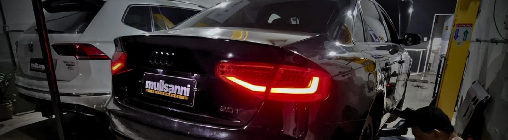
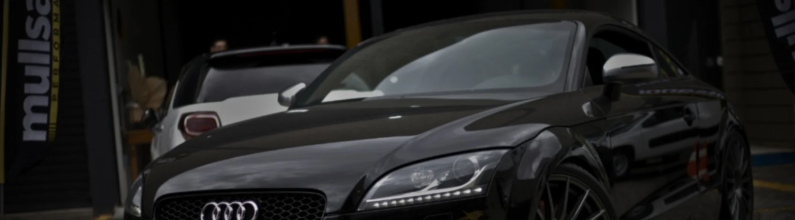

+56 whp+10 kgfm
Mini JCW
Stage 2 · Gasolina comum
Antes192 whp · 27 kgfm
Depois248 whp · 37 kgfm

Remap, escape e preparação de importados em Lauro de Freitas. Com o mesmo diagnóstico das autorizadas e dinamômetro próprio. O ganho é medido antes e depois, na roda. Não é promessa: é a leitura.
Vilas do Atlântico, Lauro de Freitas · BA
Trabalhamos com o equipamento de diagnóstico das próprias montadoras. Se o seu importado está aqui, a central dele é acessível sem improviso.
Medido no dinamômetro
Cada carro entra na máquina antes, recebe a calibração e volta. Você sai com a leitura das duas medições. Potência em WHP, na roda, em carros reais que passaram pela oficina.
Leitura ilustrativa da forma antes × depois. Os números de cada carro estão abaixo, do jeito que saíram da máquina.
Stage 2 · Gasolina comum
Stage 2 · Gasolina comum
Stage 2 · Aspirado
Stage 2 · Gasolina comum
Stage 2 · Downpipe Nova Racing
Stage 1 · Sem delay de acelerador
Números medidos em veículos específicos, no dinamômetro da própria oficina. Não valem como promessa para outro carro: cada motor responde conforme combustível, hardware e estado. O seu é medido antes e depois, e a leitura fica com você.

Por que aqui
A diferença de um preparador não está no cavalo que ele promete, está na máquina que ele tem para provar e no software que ele desenvolve.
Os mesmos equipamentos de diagnóstico e configuração usados pelas concessionárias. É o que permite mexer em módulo de importado sem gambiarra.
Audi · BMW · Jaguar · Mercedes-Benz · Lamborghini · Land Rover · Porsche · Volvo
O carro é medido antes e depois na própria oficina. Quem não tem dinamômetro entrega o ganho no papel, ou manda o carro medir em outro lugar.
Representante oficial ACF Performance: o mapa é desenvolvido para o seu carro e ajustado ao combustível e ao hardware que ele tem. Dá para pedir detalhe: abrir válvula de escape, tirar cold start ou mudar o corte de giro.
Downpipe e catback em aço inox pela Nova Racing, dimensionados para a motorização, no lugar de peça universal adaptada na marra.
Tudo no mesmo lugar, com o carro sempre passando pela máquina.
Calibração Stage 1 e Stage 2 do motor e do câmbio, desenvolvida para o seu veículo e medida no dinamômetro.
Revisão e reparo com scanner original da montadora, incluindo configuração de módulo que oficina comum não acessa.
Catback e downpipe fabricados sob medida em aço inox, dimensionados para a motorização.
Remoção do atraso do acelerador, controle da válvula de escape, cold start e outros acertos pedidos pelo dono.
Medição de potência e torque na roda, com a leitura antes e depois entregue a você.
Leitura e configuração de central em veículo importado, incluindo o que a oficina comum não tem equipamento para acessar.
Quem põe a mão no seu carro
"Cada carro que entra aqui não é só mais um. É um projeto que a gente abraça como se fosse nosso."
Equipe com experiência em manutenção de importados e em competição. A calibração é desenvolvida junto da ACF Performance, e cada acerto passa pela máquina antes de o carro sair.
Orçamento
Conta o que você tem e o que quer resolver. A gente responde o que dá para fazer, o que muda na prática e quanto custa. E se não valer a pena, a resposta é essa.